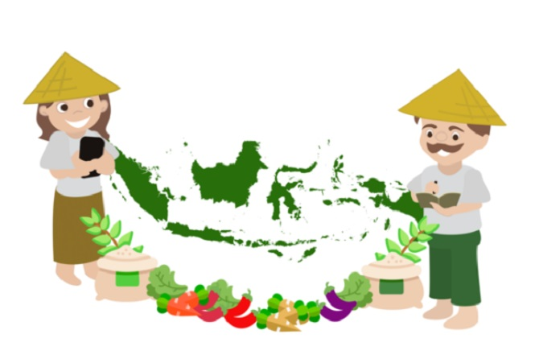

|  | ||||
|---|---|---|---|---|
| Sumatra Kalimantan Riau Jambi |
Salah satu sektor unggulan Provinsi Riau adalah pertanian yang berperan dalam perkembangan perekonomian Riau.Produksi komoditas utama pertanian adalah kelapa sawit yang melimpah ruah,padi,jagung dan kedelai. Selain itu hasil pertanian lainnya yang merupakan komoditas Provinsi Riau adalah kacang tanah,kacang hijau,ubi kayu dan ubi jalar. |
|||